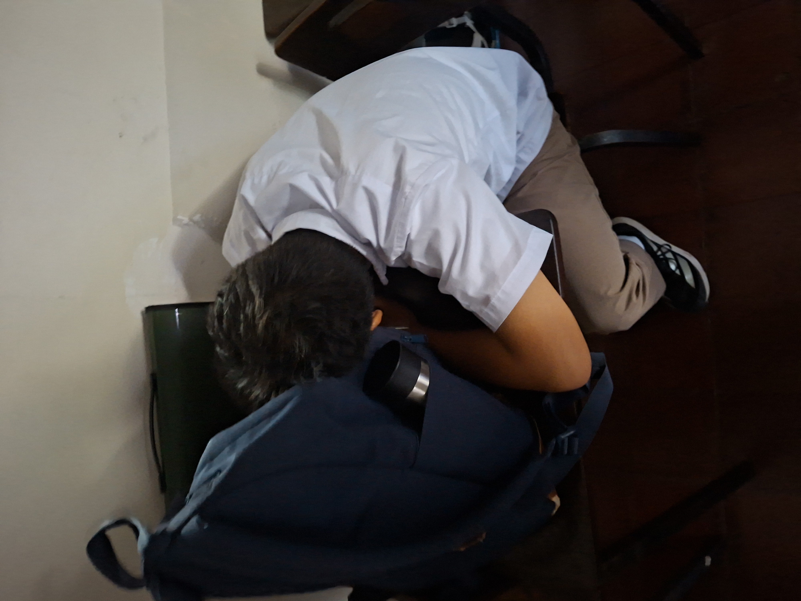

About us
We are David Babaran and Keone Robles of 9-Strontium, and this is our CS3 Project!
We hope you enjoy as we present to you the best club in the world!

This website has information on the men's team. From the history of the club, to the present day.
A look at the players and the coaching, and some statistics, this website was made for Real Madrid fans.
